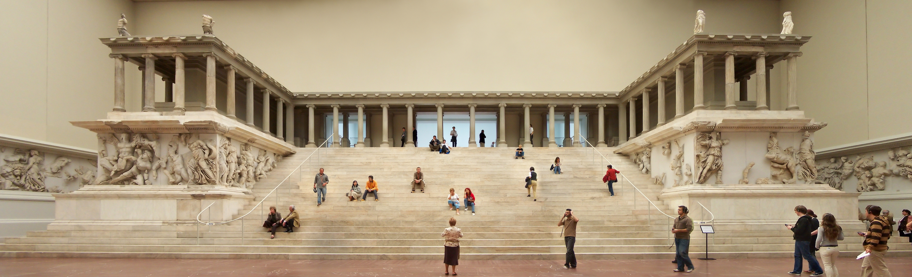

Great Altar of Pergamum

The Great Altar of Zeus Soter on the acropolis of Pergamum, excavated by Carl Humann from 1878 and now reconstructed in Berlin, with its Gigantomachy frieze of gods defeating giants. Pergamum was the first city in Asia to establish a cult of a living emperor, and its Asclepieion — the healing sanctuary of Asclepius, whose emblem was the serpent — drew crowds seeking cures through dream incubation. The altar's throne-like form, the imperial cult, and the serpent sanctuary together made Pergamum, in the words of Revelation, the place 'where Satan's seat is.'
Interpretations
Which single thing 'Satan's seat' denotes is debated: older scholarship favoured the Zeus altar, many modern commentators the imperial cult, others the Asclepieion. This entry does not settle that debate; it presents all three candidates, since the letter's force does not depend on picking one. Antipas's martyrdom rests on early church tradition (the Martyrdom of Antipas), not on contemporary documentation.
Scripture Illuminated
Biblical Significance
Revelation 2:12-17 addresses the church in Pergamum, commending believers who held fast 'even in those days wherein Antipas was my faithful martyr, who was slain among you, where Satan dwelleth.' The altar and sanctuaries show what that faithfulness cost: a city saturated with rival saviours — Zeus Soter, Asclepius Soter, and the emperor — each claiming the salvation Christ alone gives.